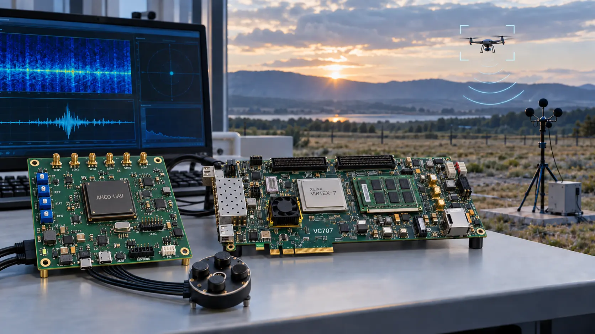

Acoustic input
0.8 s mono waveform
35,280 samples
Research software · Hardware–software co-design
An end-to-end clean-room implementation of the SHIELD/AHCO UAV acoustic-classification architecture, spanning signal preprocessing, 1D-F-CNN inference, precision-aware training, bit-accurate reference models, synthesizable RTL, and cycle-accurate co-verification.
Interactive system walkthrough
Follow an illustrative acoustic segment through preprocessing, neural-network inference, precision mapping, RTL execution, and binary classification.
Ready · INT8 selected
0.8 s mono waveform
35,280 samples
Normalization and feature extraction
Four convolutional blocks
8-bit operands
Shared MAC and SRAM-timed engines
UAV or non-UAV output
Selected arithmeticINT8 · symmetric integer
Operand storage8 bits · 4× below FP32
InterpretationIllustrative flow · not a measured result
Physical validation concept
A system-level view of the proposed ASIC carrier, FPGA-based pre-silicon validation, and an acoustic UAV detection and tracking configuration.

Proposed ASIC carrier VC707 validation Acoustic field testConcept status This visualization distinguishes the proposed ASIC-on-PCB integration from the FPGA validation path and illustrative field-evaluation scenario; it does not imply a fabricated chip or completed deployment.
System architecture
The project maintains traceability between source-defined architectural properties and clean-room implementation decisions across the software and hardware stacks.
Mono-WAV segmentation, amplitude normalization, and MFCC-20, Mel, PSD, and ZCR feature extraction.
Source-aligned 1D-F-CNN with four convolutional blocks and serialization-aware dimensional reduction.
Post-training quantization, learned clipping, PACT, sensitivity analysis, and mixed-precision QAT.
Bit-accurate arithmetic, integer golden layers, and a runtime-selectable transprecision MAC.
Conv1D, Dense, MaxPool, SRAM timing, scheduling, and Python/SystemVerilog equivalence.
Supported numeric formats
The framework provides explicit software and hardware models for integer, fixed-point, floating-point, minifloat, and posit arithmetic.
Reference training and evaluation.
Reduced mantissa emulation.
Symmetric per-tensor path.
Explicit fractional arithmetic.
Representable-value codebooks.
Shared 4-bit datapath modes.
Verification methodology
Verification proceeds from arithmetic primitives to complete memory-timed compute blocks, isolating errors at each integration boundary.
Exact integer reductions for sum(q_a × q_w) and sum(q_a).
Affine correction, bias, PACT clipping, and 8-bit requantization.
Dense and padded Conv1D traversal compared across Python and RTL.
Explicit one-cycle SRAM reads, valid handshakes, and latency-aware scheduling.
Fully wired Conv1D → SRAM → MaxPool with cycle-model agreement.
Measured results compared with published targets; unavailable values remain pending.
Evaluation status
Source-reported values are recorded as comparison targets and remain explicitly separated from measurements generated by this implementation.
| Metric | Source target | Reproduced status |
|---|---|---|
| FP32 accuracy | 89.91% | Pending dataset run |
| INT8 accuracy | 89.14% | Pending dataset run |
| FXP8 accuracy | 88.97% | Pending dataset run |
| Serialized dimension | 35,072 → 8,704 | Dimensionally verified |
| FPGA power / latency | 0.94 W / 116 ms | Pending implementation |
| ASIC result | 1.56 GHz / 3.29 mm² / 1.65 W | Pending implementation |
Reproducibility
After providing the dataset and trained checkpoints, the workflow generates machine-readable and publication-ready comparison reports.
git clone https://github.com/mukullokhande99/Sush-project.git
cd Sush-project
python -m venv .venv
source .venv/bin/activate
pip install -r requirements.txt
python -m shield_ahco.repro.pipeline \
--data-root data \
--baseline-checkpoint runs/thesis_waveform/best.pt \
--reduced-checkpoint runs/thesis_waveform_reduced/best.pt \
--outdir reproduction_resultsArchitectures, supported formats, equations, and published comparison targets.
Canonical formats, widths, metadata representation, memory timing, and control.
Accuracy and PPA appear only when backed by an actual experiment or implementation.